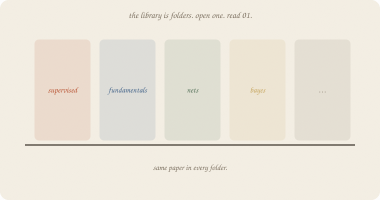
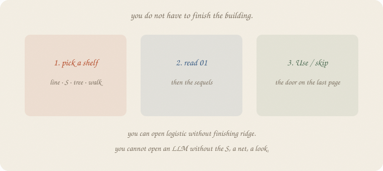
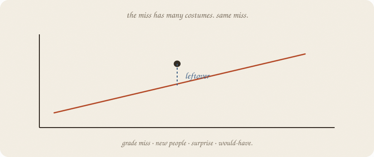
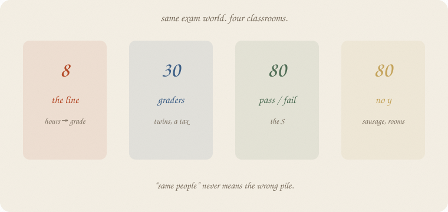
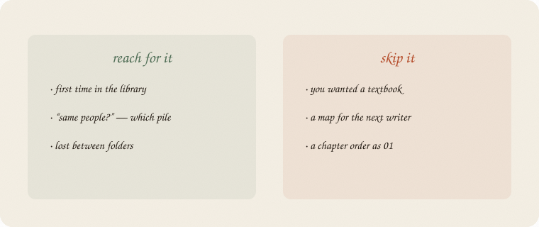

datazines · a sketchbook

This is the front door. You are a reader. Start here, then pick a folder.
Job-interview version. Derivations live elsewhere.
Flip it like a notebook. One page = one idea. Done.
Each note is a zine: paper, ink, one idea per page.
A picture before a formula. A cheat sheet that says when to reach for the method and when to skip it. Numbers that were run, not guessed.
It is not a textbook. It is not a blog. It is the version you would sketch on a whiteboard if someone asked “what is ridge?” and you had four minutes.
The site is those zines in a browser. Same pencils.
The library is the folder list. Those are ideas inside a folder.
| folder | what is in it |
|---|---|
supervised learning/ |
regression, classification, ensembles |
fundamentals/ |
train / test, bias vs variance, metrics |
optimization/ |
gradient descent |
probability/ |
distributions, beta |
neural nets/ |
tiny net → embeddings → attention → LLM |
inference/ |
t-test, bootstrap |
causal/ |
confounding, causal impact |
time series/ |
lag, trend, season |
unsupervised/ |
PCA, k-means |
bayes/ |
prior, MCMC |
rl/ |
the loop, bandits, Q |
Inside a folder, file sort is reading order. 01 is the ordinary idea. 02 is a sequel — shorter.
You do not have to finish supervised learning/ before you open unsupervised/. You do read 01 before 02 in the same family.

Lost? Three honest starts:
supervised learning/regression/)fundamentals/)supervised learning/classification/)An LLM lives in neural nets/, after a tiny net. Not the whole library.
You have a cloud of people. You draw a machine. Almost nobody sits on it.
The gap — real minus guess — is leftover.

Notes reuse that miss: a grade miss, a miss on new people, a surprise of the next word, actual − would-have. Ridge taxes knobs, not leftover. A t-test asks if leftover could have faked a number.
That is why the voice feels like one notebook. It is not how you navigate. Folders are.
Hours, sleep, tutor, coffee — one story. Not one pile of people.

When a note says “same people,” it means this pile, not the whole vault.
| pile | y | n (side fact) | typical folder |
|---|---|---|---|
| the line | grade | 8 | regression 01, inference |
| twins | grade + minutes | 30 | ridge → LARS, fundamentals 01–02 |
| pass / fail | yes / no | 80 | classification, ensembles, metrics |
| unlabeled | none | 80 | unsupervised |
A grade is not a pass. No y is not a grade. Two crowds can both be 80.
If you keep only one thing:
folders are shelves. read 01. leftover is the voice, not the map.
| word | meaning |
|---|---|
| folder | a shelf (supervised learning/, fundamentals/, …) |
| 01 | first note in that family; sort order is reading order |
| Use / skip | when to reach for it, when not |
| leftover | real − guess (the voice) |
| pile | the line / twins / pass-fail / unlabeled |
Also called (in a room):
| here | there |
|---|---|
| leftover | residual / error |
| 01 | first sketchbook of a family |
| zine | one note |

Reach for it when
Skip it when
Pays you: the folder map, three honest starts. Permission not to finish one shelf before another.
Costs you: no sklearn page — this is a map, not a fit. No derivation.
Front door. First folder: supervised learning/regression/ — 01 linear regression.
Flip it like a notebook. One page = one idea.